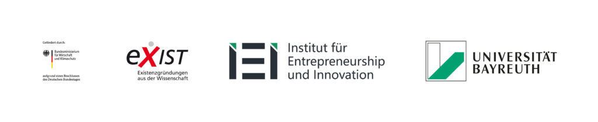

Ihr habt Fragen rund um den Start-up Design Award? Schickt euer Anliegen gern jederzeit an uns über das Kontaktformular:
Der Start-up Design Award ist ein Event des Instituts für Entrepreneurship & Innovation der Universität Bayreuth.
Das Institut beschäftigt sich mit den zentralen Themen des innovativen Unternehmertums. Es vereint seine Kernkompetenzen in den Feldern Forschung, Lehre & Transfer. Durch sein Wirken gibt das IEI seine Innovations- und Gründungskompetenzen an die Region und Wirtschaft weiter. Im Mittelpunkt der Arbeit steht dabei der Aufbau von Gründungs- und Innovationsskills, die Umsetzung exzellenter, international sichtbarer Grundlagen- und Anwendungsforschung sowie die nachhaltige Steigerung der Innovations- und Zukunftsfähigkeit von sowohl etablierten Unternehmen als auch neuen Existenzgründungen.
Mit dem Start-up Design Award möchte das Institut junge, innovative Start-ups ansprechen und ihnen eine Plattform im Rahmen des Wettbewerbs geben.
